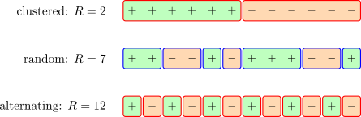

7.1 The Runs Test for Randomness
Every test so far has assumed the observations are independent. The runs test, due to Wald and Wolfowitz, is how that assumption is checked.
Reduce the sequence to two symbols — above and below the median, success and failure, \(+\) and \(-\) — and count the runs: maximal blocks of like symbols. The sequence \[+\ +\ -\ -\ -\ +\ -\ +\ +\] has runs \(\{++\}, \{---\}, \{+\}, \{-\}, \{++\}\), so \(R = 5\).

Both extremes are evidence against randomness, and this is the point of the test. Too few runs means the symbols cluster — successive observations resemble one another, which is positive serial correlation. Too many means they alternate more than chance allows, which is negative serial correlation. A one-sided test would miss half the ways randomness can fail.
With \(n_1\) symbols of one kind and \(n_2\) of the other, \(N = n_1 + n_2\), under \(H_0\) that the arrangement is random: \[E(R) = \dfrac {2n_1n_2}{N} + 1, \hspace {0.8cm} \operatorname {var}(R) = \dfrac {2n_1n_2\left (2n_1n_2 - N\right )}{N^{2}(N-1)},\] and for \(n_1, n_2 > 10\) \[Z = \dfrac {R - E(R)}{\sqrt {\operatorname {var}(R)}}\ \thicksim \ N(0,1),\] with a continuity correction of \(0.5\) applied towards the mean. For smaller samples exact tables of \(R\) are used.
Note 7.1. This test is the natural companion to Chapter 5. Mann–Kendall assumes independence; the runs test is one way to find out whether that assumption is tenable before the Hamed–Rao correction is reached for.
Questions on this section
Stuck on something here? Ask below and it stays attached to this topic.